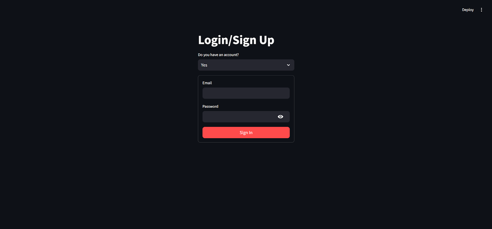
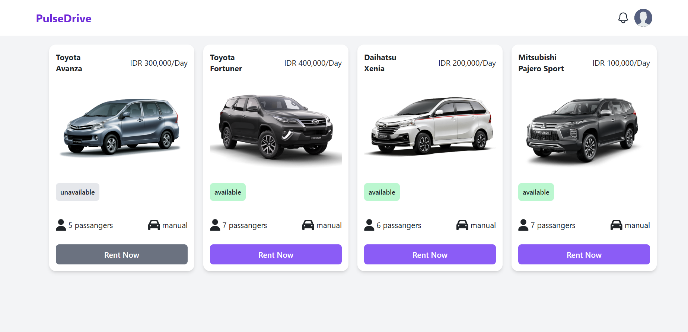

Hi, Welcome
I am an Informatics student at Muhammadiyah University of East Kalimantan with a GPA of 3.84. Passionate about web development, cloud computing, and exploring advancements in artificial intelligence and cybersecurity. Successfully completed the Bangkit Academy 2024 Cloud Computing program, gaining hands-on experience in Google Cloud technologies and project development. Actively seeking opportunities to apply my technical expertise and contribute to impactful projects.
Get in touch with me
My Projects

HyperMeta
Github RepositoryHyperMeta automates hyperparameter optimization using advanced metaheuristic algorithms like Genetic Algorithms (GA) and Particle Swarm Optimization (PSO), eliminating the need for time-consuming manual tuning. It features an interactive dashboard for selecting ML models, applying optimization techniques, and visualizing results, improving model performance while reducing computational costs. The platform supports various machine learning models, such as SGDClassifier and XGBoost, and deploys them using Google Cloud services like Cloud Run, Cloud Build, and Artifact Registry. Results are displayed through a streamlined dashboard, making hyperparameter tuning more efficient and accessible.

Pulse Drive
Github RepositoryPulse Drive is a dynamic web application designed to streamline car rental services. With features like user-friendly navigation, real-time availability checks, and secure online booking, it aims to provide a seamless and efficient experience for both renters and car rental businesses. Whether you're planning a short trip or an extended journey, Pulse Drive simplifies the process of finding and renting a car to suit your needs.